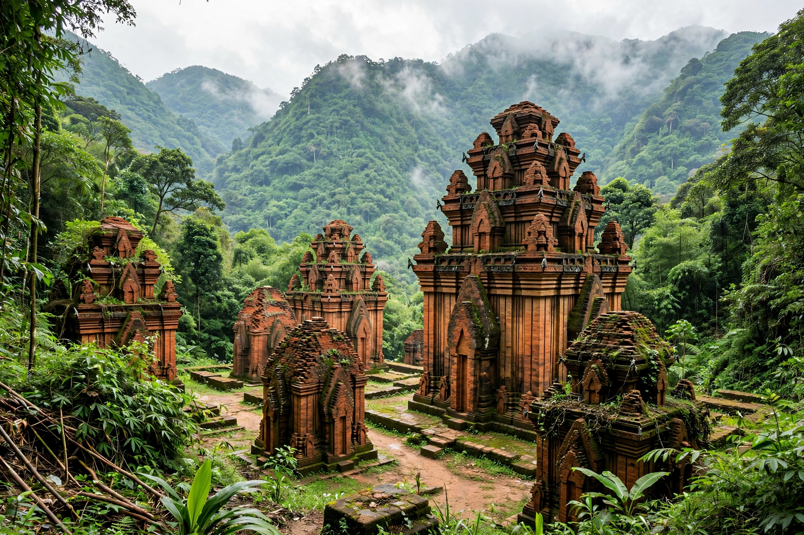

Mỹ Sơn
From Wikipedia, the free encyclopedia
| Location | Quảng Nam Province, Vietnam |
|---|---|
| Period | 4th–14th centuries CE |
| Culture | Kingdom of Champa |
| Dedicated to | Shiva (as Bhadreshvara) |

Mỹ Sơn is a cluster of abandoned and partially ruined Hindu temples in central Vietnam, in Quảng Nam Province near the village of Duy Phú. Built between the 4th and 14th centuries by the kings of Champa, the site was the religious and political capital's sacred centre, dedicated to the worship of the god Shiva under the name Bhadreshvara, and served as a burial place for Cham kings.
History
The earliest temple, of wood, was burned in the 6th century and rebuilt in brick and stone by King Sambhuvarman; over succeeding centuries some 70 architectural works rose in the valley beneath the sacred mountain Mahaparvata ("Cat's Tooth Mountain"). The Cham built in fired brick joined by a still-debated resin mortar, with sandstone carvings of Hindu mythology. The French scholar Henri Parmentier documented the site from 1899. Mỹ Sơn suffered severe damage during the Vietnam War, including a major US bombing raid in August 1969 that destroyed the site's largest tower (A1). It was designated a UNESCO World Heritage Site in 1999, and conservation continues with international assistance.